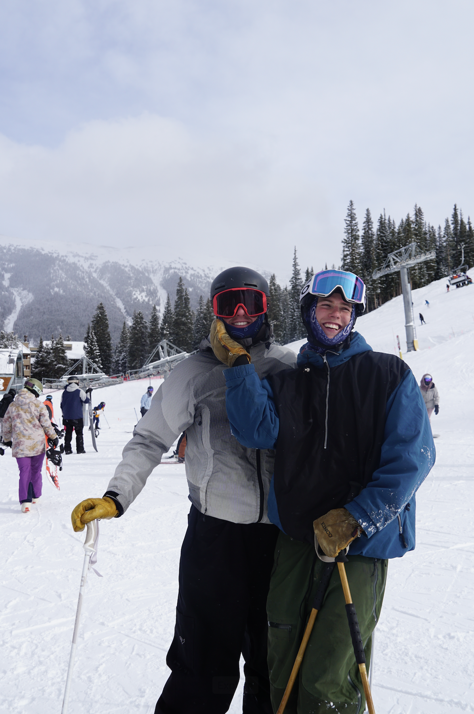
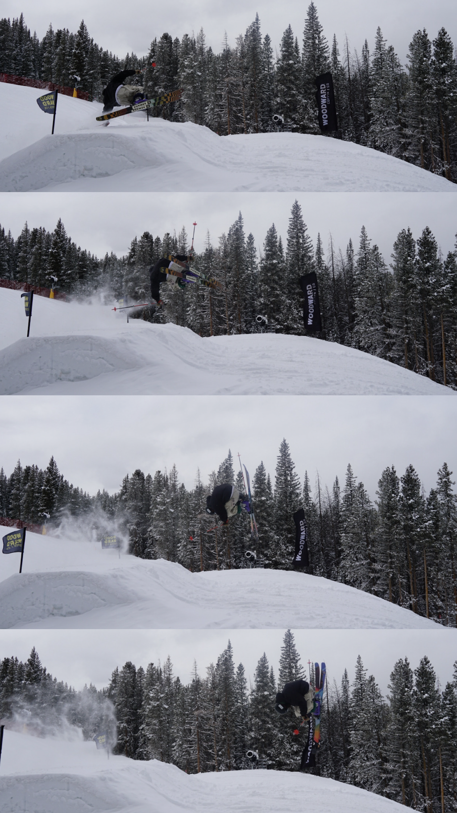
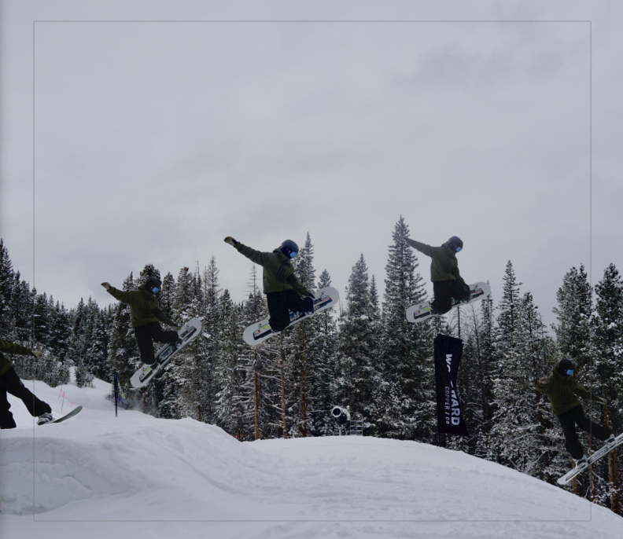

Multi-page portfolio website
Built with semantic HTML elements, consistent templates across pages, and accessible navigation.
- Goal: strong structure
- Focus: headings, content flow, validation
A few examples of work I've done (or am currently building). These descriptions are placeholders that reflect the kind of work I want to keep doing.
Built with semantic HTML elements, consistent templates across pages, and accessible navigation.
Practiced form structure with labels, fieldsets, and appropriate input types.
Analyzed product options using basic financial metrics and qualitative fit. Worked for different businesses interning as a social media manager and analytics specialist.
Wrote a short analysis breaking down weather and sports betting, comparing different APIs, stadium and team statistics, etc.
A collection of photos I've taken.




